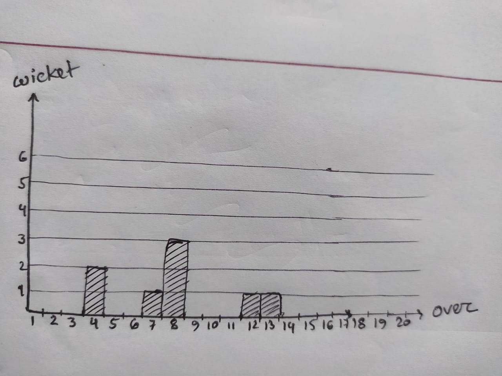
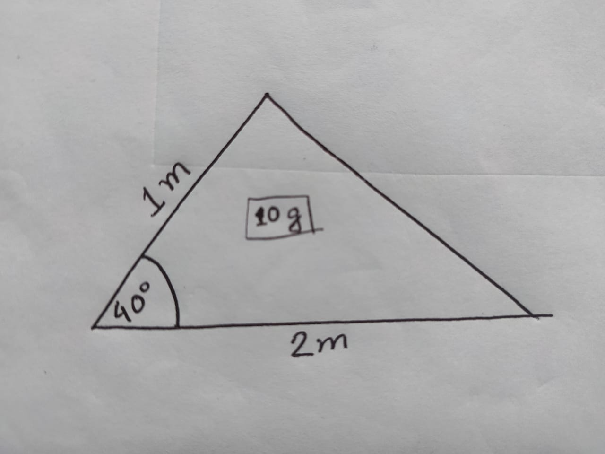
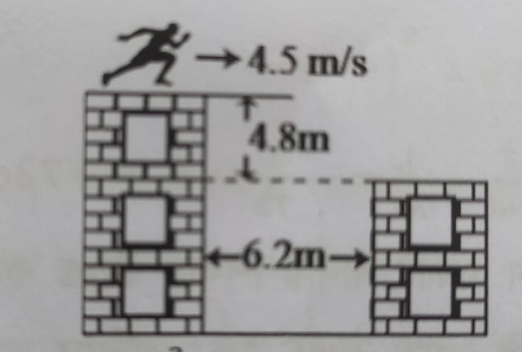
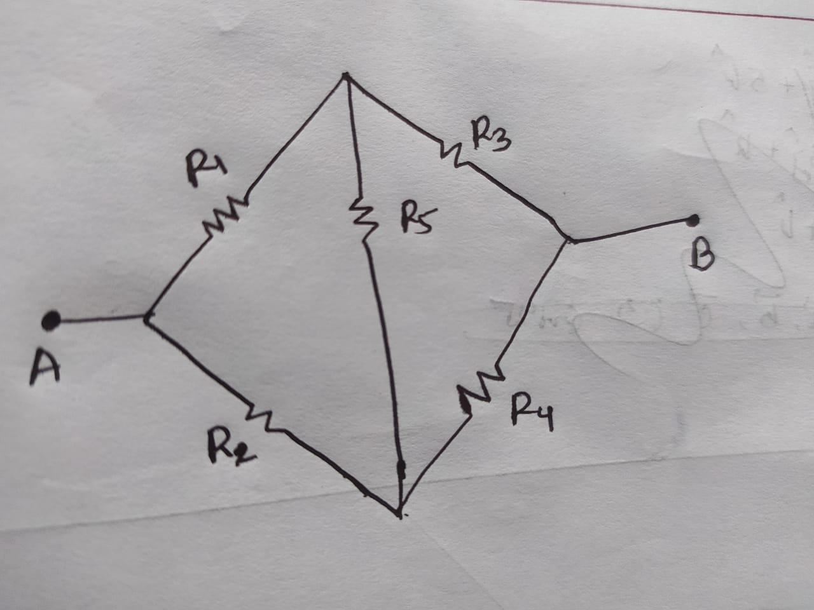
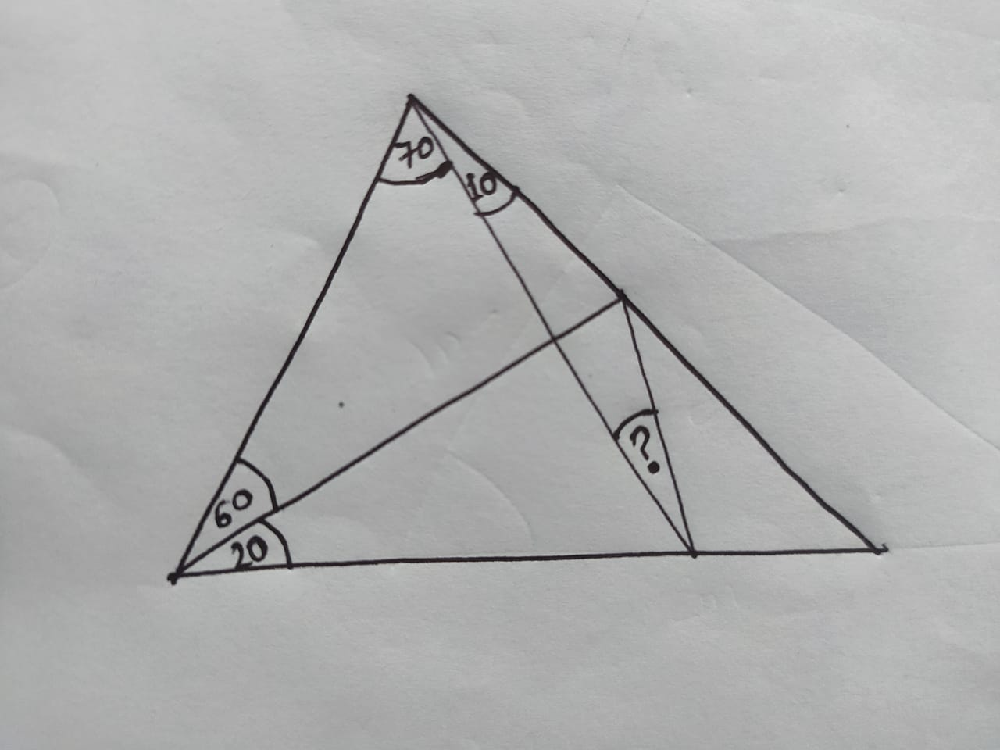
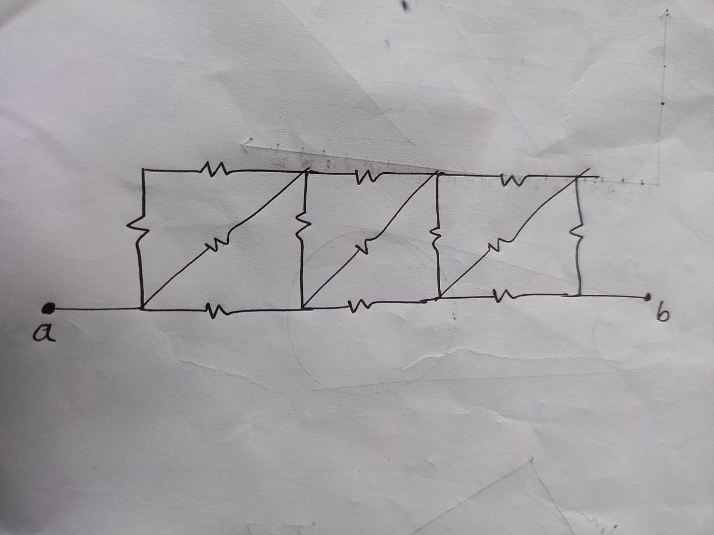
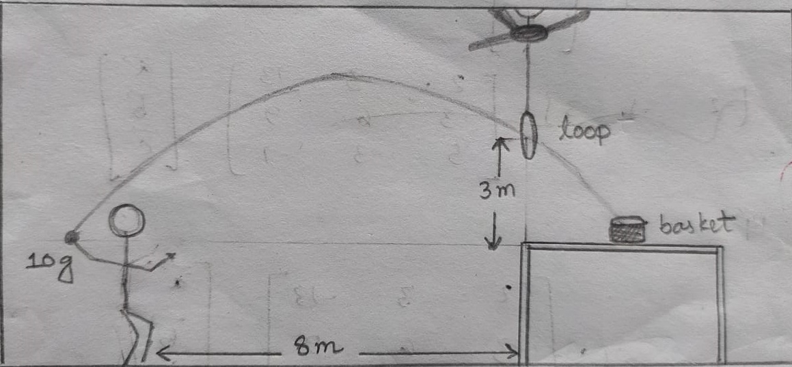
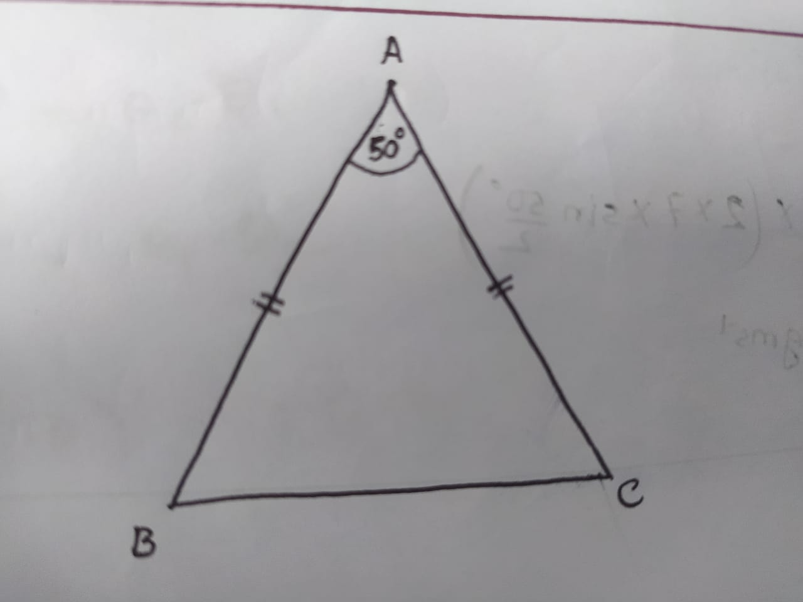

-
Cricket এ এক ইনিংসে wicket বনাম over এর graph এমন ভাবে আঁকা হয় ধরে
নিয়ে উত্তর কর।

বাংলাদেশ বনাম ভারতের মধ্যকার T-20 match এর এক ইনিংসে wicket বনাম over
এর bar graph কত রকম হতে পারে?
-
হল ভোল্টেজের পরীক্ষার জন্যে একটি তামার পাত ব্যবহার করা হলো। পরীক্ষা
শেষে দেখা গেল পাতের প্রস্থ বরবার একক দৈর্ঘ্যে প্রাপ্ত হল ভোল্টেজ,
দৈর্ঘ্য বরাবর একক দৈর্ঘ্যে প্রয়োগকৃত ভোল্টেজের \(50\)% । পরীক্ষার
জন্যে কত মানের চৌম্বকক্ষেত্র পাতের পুরুত্ব বরাবর প্রয়োগ করা হয়েছিল?
[তামার আপেক্ষিক গুরুত্ব \(8.95\) এবং আপেক্ষিক রোধ \(1.72 \times
10^{-8} Ωm\)]
-
একটা আপেলের টুকরা আছে যার ভর \(10 gm\) এবং এর যেকোনো প্রস্থচ্ছেদ যে
চাপ নির্দেশ করে তার ব্যাসার্ধ \(2 cm\) এবং চাপটি কেন্দ্রে \(150°\) কোণ
তৈরি করে। টুকরাটির সম্মুখ রেখার সাপেক্ষে তার জড়তার ভ্রামক নির্ণয় কর।
আপেল কে নিরেট গোলক কল্পনা কর।
-
অজানা বাহুর সাপেক্ষে জড়তার ভ্রামক নির্ণয় কর।

-
$$f(x) = \int_2^x \frac{2^x + 1}{x^2 + 1}dx$$ \((f^{-1})^{'}(0) = ?\)
-
একটা বস্তুর নিশ্চল ভর ও গতিশীল অবস্থায় ভরের গড় মান = \(3 kg\).
বস্তুটির ভরবেগ = \(1.039 \times 10^9 kgms^{-1}\)
বস্তুটির গতিশক্তি কত \(Joule\)?
-
\(f^{''}(x) = sin(f(x))\) এবং \(f^{-1}(\pi) = (f^{'})^{-1}(2) = 0\)
হলে
প্রমাণ কর যে, \(0\), \(f(x)\) এর একটি প্রান্তীয় মান।
-
\(9.8 m/s\) বেগে \(45°\) তে নিক্ষিপ্ত প্রাস ভূমিতে পরার আগে কত
দূরত্ব অতিক্রম করে?
-
$$f(x) = sinx + \int_0^{\pi/2} f(t)dt$$ হলে, \(f(0)\) নির্ণয় কর।
-
\(F = 10^4 N\), \(Y = 200 GPa\), \(\sigma =
0.3\), \(L_0 = 4m\), \(A_0 = 2mm^2\)
$$l = ?$$
- \(Domain\) নির্ণয় কর : \(\log_{(2-x)}{(2x+1)(3-x)} > 2\)
-
\(27°\) তাপমাত্রায়, $$2NO + 2H_2 \to N_2 + 2H_2O$$ $$r =
k[NO_2]^2[H_2]$$ যে মূহুর্তে এ \(P_{NO} = 0.12 atm\), \(P_{H_2}
= 0.2 atm\)
তখন \(\frac{d}{dt}(\frac{1}{r}) = ?\)
-
দুটি বক্সে যথাক্রমে \(5\) টি লাল ও \(4\) টি সাদা এবং \(1\) টি লাল ও
\(4\) টি সাদা বল আছে
প্রথম বক্স থেকে দৈবভাবে দুটি বল নির্বাচন করা হল, দেখা গেল দুটি বল একই
রঙের। বল দুটকে দ্বিতীয় বক্সে রেখে একটি বল ঐ বক্স থেকে একটি বল দৈবভাবে
নেয়া হলো। দেখা গেল শেষ বলটি লাল রঙের।
এই লাল বলটি ঘটনার শুরুতে প্রথম বক্সে থাকার সম্ভাবনা কত?
-
একটি পানিপূর্ণ চৌবাচ্চা খালি করার জন্য \(100\) জন মানুষ পালাক্রমে কাজ
করল। সবাই সমান কাজ করলে \(72\) তম ব্যক্তি কত অংশ পানি তুলেছে?
-
পানির গভীরতা মাপার জন্য, একটি জলাশয়ের পানির পৃষ্ঠ থেকে \(0.005 m\)
ব্যাসার্ধের এবং \(2.5 \times 10^3 kg/m^3\) ঘনত্বের একটি বল ছেড়ে দেয়া
হল। \(10s\) পর বলটি জলাশয়ের তলায় পড়ল।
বস্তুটি \(9 s\) এ প্রান্তবেগ অর্জন করে
তাহলে জলাশয়ের গভীরতা নির্ণয় কর। [পানির সান্দ্রতা \(\eta = 1.6 \times
10^{-3} Nsm^{-2}\) এবং ঘনত্ব \(1000 kgm^{-3}\)]
-
$$P = \frac{3AB^2}{C^3} - \frac{4AC^2}{D}$$ $$4.9 \le A \le 5.1$$
$$3.8 \le B \le 4.2$$ $$2.7 \le C \le 3.3$$ $$3.9 \le D \le 4.1$$
\(P\) এর \(Range\) নির্ণয় কর
-
একটি খরস্রোতা নদীর প্রস্থ \(3 km\). ঐ নদী পাড়ি দেয়ার জন্য দুইটি নৌকা
একই বেগে যাত্রা শুরু করল। প্রথম নৌকা সর্বনিম্ন সময়ে আর দ্বিতীয় নৌকা
সর্বনিম্ন পথে নদী অতিক্রম করতে চায়। দেখা গেল, প্রথম নৌকা \(5 km\) পথ
অতিক্রম করেছে। দ্বিতীয় নৌকা কতটুকু পথ অতিক্রম করেছে?
-
তোমার ছোট বোন দিবা অসুস্থ। তুমি তার সময় কাটানোর জন্য দেয়ালের সাথে সুতা
দিয়ে একটি নগণ্য ভরের বব ঝুলিয়ে দিয়েছ। দিবা সেই বব লক্ষ্য করে একটি
টেনিস বল নিক্ষেপ করে করে খেলে। সে যাতে ক্লান্ত না হয় সেজন্য তুমি
বুদ্ধি করে বলে দিয়েছ কত বেগে নিক্ষেপ করলে সবচেয়ে কম শক্তি খরচ করে খেলা
যাবে। দিবা তোমার কথা শুনে ঐ বেগে এবং \(45°\) কোণে নিক্ষেপ করায় সেটা
ববে না লেগে দিবা হতে \(10m\) দূরে গিয়ে পড়ল। তখন তুমি হিসাব করে দেখলে
\(45°\) এর চেয়ে বেশি কোণে নিক্ষেপ করতে হবে। সঠিক কোণটি নির্ণয় করে ঐ
কোণে নিক্ষেপ করার পর সেটা ববে আঘাত করে দিবা হতে \(5m\) দূরে গিয়ে পড়ল।
দিবার কাঠামোতে ববের অবস্থান নির্ণয় কর
-
\(v_{ab}=0.85c\), \(v_{bc}=0.90c\), \(v_{cd}=0.95c\),
\(v_{de}=-0.80c\) হলে \(v_{ea}=?\)
-
conservative force field গুলো চিহ্নিত কর
(a) \(x y^2 \hat{i} + x^2 y \hat{j} \)
(b) \(3x^2y \hat{i}
- x^3 \hat{j}\)
(c) \((x+y) \hat{i}\)
(d) \(\frac{1}{x}
\hat{i} - y \hat{j}\)
-
একটি সুতার এক প্রান্তে \(10 N\) বল প্রয়োগ করা হলো। প্রান্ত থেকে \(1
m\) দূরে বল পাওয়া গেল \(3.3 N\)। তাহলে সুতার দৈর্ঘ্য কত?
-
সমকেন্দ্রিক দুটি ফাঁপা গোলকের ব্যাসার্ধ যথাক্রমে \(10 cm\) ও \(12
cm\). এই সিস্টেমের ধারকত্ব একটি তৃতীয় গোলকের (নিরেট) ধারকত্বের সমান
হলে তার ব্যাসার্ধ নির্ণয় কর।
-
একটি নিরেট গোলকের মধ্য থেকে একটি গোলক আকৃতির অংশ কেটে নেয়া হলো। কেটে
নেয়া অংশের পৃষ্ঠে মহাকর্ষ প্রাবল্য সমঘনত্বের কত ব্যাসার্ধের একটি
গোলকের পৃষ্ঠে প্রাবল্যের সমান? কেন্দ্রদ্বয়ের মধ্যবর্তী দূরত্ব \(1m\).
-
নিচের চিত্রে চলচ্চিত্রের একজন স্টান্টম্যান একটি উঁচু ভবনের ছাদে
আনুভূমিকভাবে দৌড়িয়ে যেকোনো কোণে পার্শ্ববর্তী একটি অপেক্ষাকৃত কম
উঁচু ভবনের ছাদে লাফ দিবে। এই কাজটি করার পূর্বে সে বুদ্ধিমানের মত
তোমাকে প্রশ্ন করলো যে, এটি তার পক্ষে করা সম্ভব হবে কি না। ছাদে তার
দৌড়ের সর্বোচ্চ গতিবেগ \(4.5 m/s\) হলে সে এটা করতে পারবে কি? সেক্ষেত্রে
তোমার উপদেশ কী হবে? "ঝাঁপ দাও!" অথবা "ঝাঁপ দিও না!"

-
প্রমাণ কর যে, $$R_{ab} = \frac{(\sum R_1R_2R_3) - R_1R_3R_5 -
R_2R_4R_5}{(\sum R_1R_2) - R_1R_2 - R_3R_4}$$

-
অজানা কোণটি নির্ণয় কর

-
প্রত্যেকটি রোধের মান \(R\) হলে তুল্যরোধ নির্ণয় কর।

-
\(1.5\) \(Calorie\) খরচ করে সর্বোচ্চ কতগুলো throw করা যাবে? সেক্ষেত্রে
basket টিকে table এর কত ভিতরে রাখতে হবে?

-
দুটি নৌকা একটি নদী পার হতে একটি সর্বনিম্ন সময় এবং অন্যটি সর্বনিম্ন পথ
ব্যবহার করে। এদের অতিক্রান্ত পথের জোড় নিচের কোনটি হওয়া অসম্ভব?
(a) \(\frac{1}{e}, \frac{1}{\pi}\)
(b) \(\pi, e\)
(c) \(\pi^2, e^2\)
(d) \(\pi^3, e^3\)
-
একই ব্যাসার্ধের \(2 kg\) ও \(1 kg\) ভরের দুটো গোলক \(7 ms^{-1}\)
দ্রুতিতে যথাক্রমে \(B\) হতে \(\underline{BA}\) পথে এবং \(C\) হতে
\(\underline{CA}\) পথে যাত্রা শুরু করল। সংঘর্ষের পর তাদের ভরবেগের
পরিবর্তনের মান নির্ণয় কর।

-
$$\frac{d\theta_1}{dt} = 2(\theta_2 - \theta_1)$$
$$\frac{d\theta_2}{dt} = \theta_1 - \theta_2$$
কখন \(\theta_1 = 30°C\) হবে? [\(\theta_{1_0} = 20°C\),
\(\theta_{2_0} = 70°C\)]
-
\(x \hat{i} + y \hat{j}\) কে ঘড়ির কাটার বিপরীত দিকে \(60°\) ঘুরালে যদি
\((y-1) \hat{i} + 2 \hat{j}\) পাওয়া যায় তবে আরো \(60°\) ঘুরালে কোন
vector পাওয়া যাবে?
- \((x + iy)^a + (y + ix)^a\) এর \(argument\) নির্ণয় কর।
-
মুক্তিবেগে নিক্ষিপ্ত একটি বস্তু পৃষ্ঠ থেকে \(15R\) উচ্চতায় উঠা পর্যন্ত গড়বেগ \(\overline v\) হলে দেখাও যে \(\overline v : v_e = 5:14\)
-
প্রমাণ কর যে, \(u\) বেগে খাড়া উপরে নিক্ষিপ্ত বস্তুর সর্বাধিক উচ্চতা নির্ণয়ে \(g\) এর পরিবর্তন অগ্রাহ্য করলে হিসাবে \((\frac{u}{v_e})^2\) বিচ্যুতি হয়।
-
নটর ডেম কলেজের Chess Club কর্তৃক আয়োজিত টুর্নামেন্টে সর্বমোট \(10\) টি কলেজের প্রতিটি থেকে \(2\) জন প্রতিযোগী অংশগ্রহণ করে। লটারির মাধ্যমে প্রথম রাউন্ডে এই \(20\) জনের জন্য \(10\) টি ম্যাচ ঠিক করা হলে, এই রাউন্ডের কোনো ম্যাচেই একই কলেজের দুজন মুখোমুখি না হবার সম্ভাবনা কত?
-
\(2020!\) সংখ্যাটির অঙ্কগুলো থেকে দৈবভাবে একটি অঙ্ক নির্বাচন করা হলে, অঙ্কটি উক্ত সংখ্যার শেষোক্ত \(0\) গুলোর একটি হওয়ার সম্ভাবনা কত?
-
একটি অশূন্য Complex Number \(z\) এর জন্য \(|z + i \overline {z}| = |z| \)
\(z\) এর মূখ্য \(arguement\) নির্ণয় কর।
-
\(engineering\) শব্দের কতগুলো বিন্যাসে তিনটি \(n\) অথবা তিনটি \(e\) সমদূরত্বে অবস্থান করে?